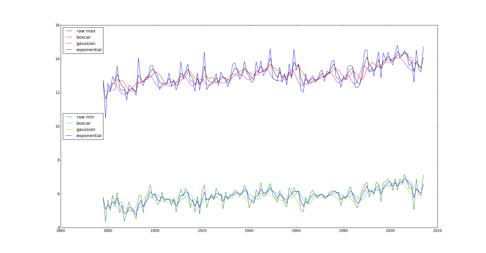
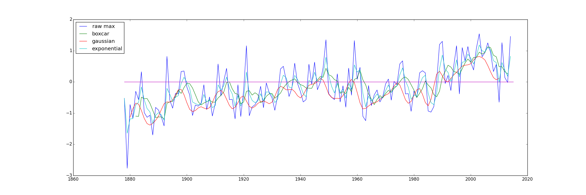

Two files are provided. cetMax.txt contains the highest recorded temperature
each month from 1878 to 2014 and cetMin.txt. the lowest recorded temperature. Both
are records of centeral England. Both are formatted as follows.
Year Jan Feb Mar Apr May Jun Jul Aug Sep Oct Nov Dec Avg
Reading in Data
Numpy contains an elegant function called genfromtxt. Used as follows.
cmax = genfromtxt("cetMax.txt")
In the case of the data files of this assignment, this function returns a 2D array
in which each line is turned into an array with elements delimited by spaces. For convenience,
a new array is created from the averages. Using a generator:
avgs = [cmax[13] for i in cmax]
Boxcar Smoothing
Boxcar smoothing, or moving average smoothing, has the effect of reducing noise
by assigning a value in an array to be the average of the array element and its neighbors of
a specified width away. For example, the 50-day
moving average, used to evaluate asset prices, has a width of 50. Another python
generator with numpy's mean function does the trick.
bcmax = [np.mean(cmaxy[i:i+5]) for i in range(len(cmaxy)-5)]
Notice in this operation a width of 5 was used. This has the effect of throwing out the
first four data points in the data. bcmax goes then from 1882 to 2014.
Gaussian Smoothing
Gaussian smoothing is slightly more intricate. One assume the statistical fluctiations
within a system are gaussian. A standard deviation is determined via a characteristic
time scale and one generates a gaussian kernel of a specified width. The function
ggk
does the trick. The symmetry of the gaussian function suggests using an odd width
kernel. Now the task is to convolve the kernel with the original data set. Numpy convolve
does the trick.
gkmax = np.convolve(cmaxy, ggk(1.5, 7), 'valid')
Exponential Smoothing
An iterative approach. The values of an array are reassigned per the following equation.
This function exposmooth returns
an exponentially smoothed array.
Plotting

Baseline
Now that the mood has been set, let's begin. A baseline analogous to the origin of a coordinate system in a projectile motion
problem. One must set the zero somehwere. However, the placement of a baseline may be suggestive of a behavior of data.
For example, the following plot uses the average maximum temperature of the years 1968 to 1998. A baseline set at this level
makes more certain the eye sees the upwards trend of the noisy data.

Baseline Optimization via Blind Parameter Searching
This code randomly assigns a begin year and an end year
(at least 30 years after) and computes the average of the time between those years to be the baseline. It then computes the
value of the anomoly. In this program, the baseline to display most prominently the anomoly means the maximization of the sum of
the temperatures minus the baseline of years 2000-2010 minus the sum of the temperatures minus the baseline prior to 2000.
Seasonal Baselines
seasons.py randomly assigns a begin year and an end year
(at least 30 years after) and computes the average of the time between those years to be the baseline. It then computes the
value of the anomoly. In this program, the baseline to display most prominently the anomoly means the maximization of the sum of
the temperatures minus the baseline of years 2000-2010 minus the sum of the temperatures minus the baseline prior to 2000.